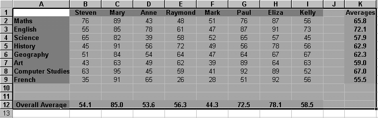
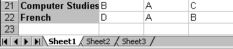
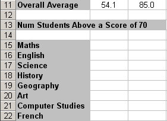
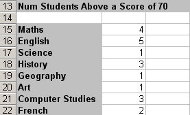

Free
computer Tutorials
|
Free
computer Tutorials
|
|
 HOME
HOME
|
Stay at Home and Learn | |||||
Using the CountIF Function in Microsoft Excel
The next Conditional function we're going to use is CountIF. This one is fairly straightforward. It looks at a range of cells and tells you how many of them meet the criteria that you set. Once again, we'll use the student exam marks spreadsheet.
Copying and Pasting Data to a new SheetOpen up the Spreadsheet you used for the last section. (If you haven't yet downloaded the spreadsheet, click here: Download the spreadsheet.) Because the exam spreadsheet might be a little full, we'll start on a new sheet. We'll copy and paste the student data onto sheet 2. To do that, follow these steps:


Add the following labels to Sheet2 of your spreadsheet:  We'll now use the CountIF function to see how many of the students were above a score of 70 in each subject.
CountIF The CountIf function only calculates things when a certain condition is met. For example, only count the students whose grades are above B. The CountIF function uses this syntax: COUNTIF(range, criteria) In other words, it takes two arguments. The first argument is range, and this means the range of cells you want to count. The criteria is what you want excel to look for when it is counting. Let's see it in action.
=CountIf(B2:I2, ">= 70")
The formula says, look in cells B2 to I2. Then check for a score of greater than or equal to 70. If you find this score, keep a Count. So 4 students achieved a mark of 70 or above for Maths. To do the rest of the scores, you can use AutoFill. When you have finished, it should look like this one below:  CountIF is a very useful function for simple data analysis.
In the next part, we'll take a look at two more useful functions: AND and SUMIF. <--Back to the Excel Contents Page
|
||||||
|